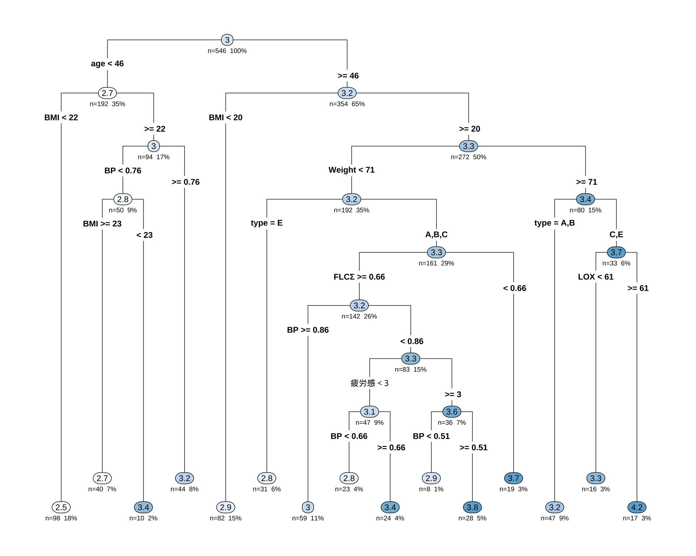
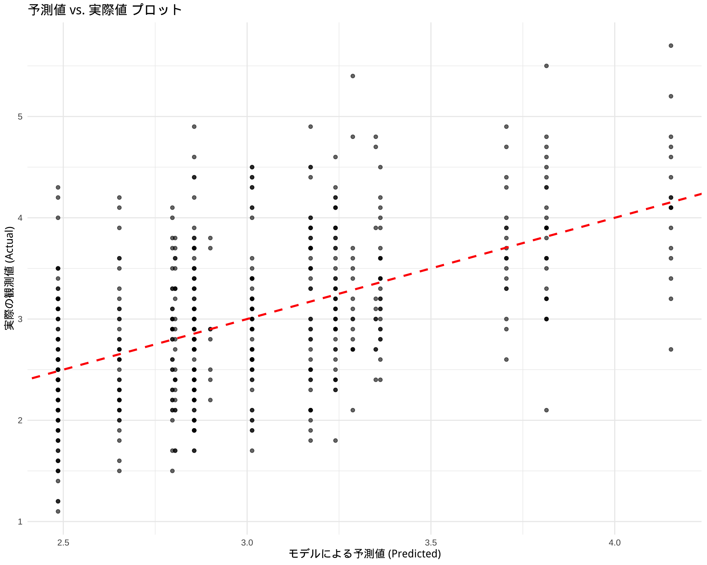
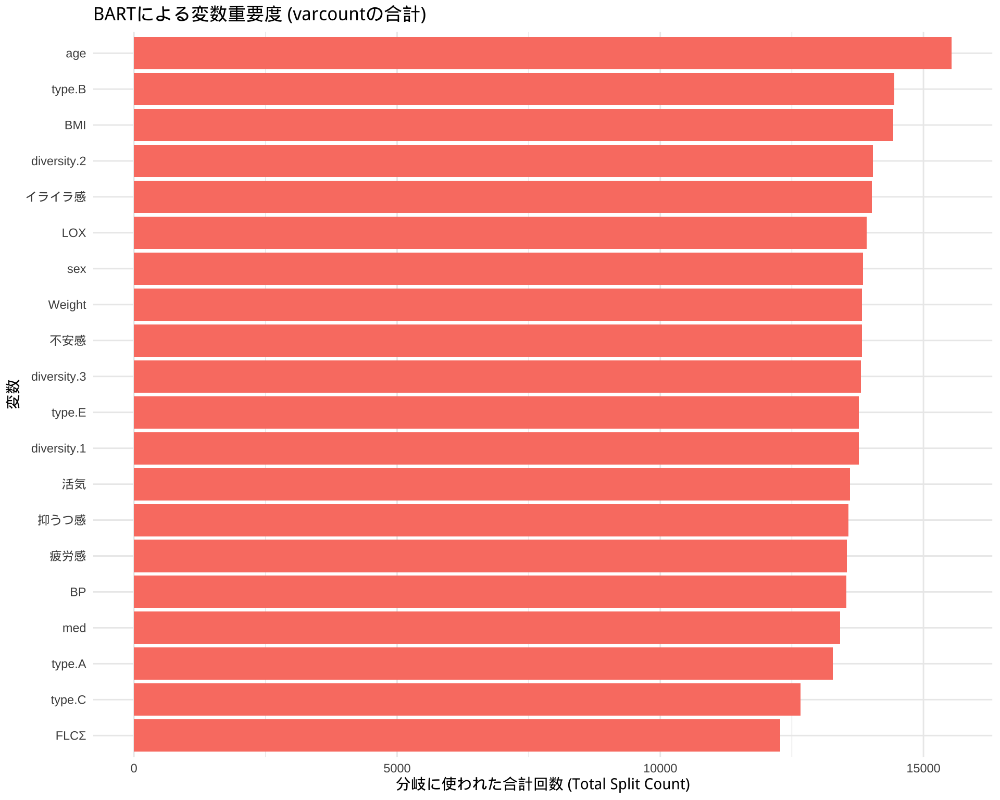

library(readxl)
library(knitr)
df <- readRDS("df.rds")
library(showtext)
showtext_auto()弘前データ５：BART による LAB 予測
備考は全て外し，LOX_Index と 判別式 も説明変数としては考慮しない．
library(dplyr)
df_filtered <- df %>%
filter(is.na(BP備考), type != "D") %>%
select(-c(BP備考, LOX_Index, 判別式, id, med_col, 年代)) %>%
droplevels()1 CART モデル
library(rpart)
library(rpart.plot)
# 目的変数が5クラスになっても、式は同じ
# rpartが自動で多クラス分類として扱ってくれる
control_params <- rpart.control(maxdepth = 3)
cart_model_LAB <- rpart(
LAB ~ ., # 目的変数を5クラスのものに変更
data = df_filtered,
method = "anova", # 分類なので "class" のまま
# control = control_params
)
printcp(cart_model_LAB)
Regression tree:
rpart(formula = LAB ~ ., data = df_filtered, method = "anova")
Variables actually used in tree construction:
[1] age BMI BP FLCΣ LOX type Weight 疲労感
Root node error: 339.76/546 = 0.62227
n=546 (18 observations deleted due to missingness)
CP nsplit rel error xerror xstd
1 0.071048 0 1.00000 1.00361 0.059494
2 0.033148 1 0.92895 0.98483 0.060099
3 0.029639 2 0.89580 0.98316 0.060330
4 0.014897 3 0.86616 0.95160 0.057546
5 0.013088 7 0.80658 1.00545 0.060647
6 0.012798 8 0.79349 1.03998 0.062809
7 0.010769 11 0.75258 1.05538 0.062869
8 0.010720 12 0.74182 1.08105 0.064538
9 0.010000 14 0.72037 1.09436 0.065910# 決定木を可視化
rpart.plot(cart_model_LAB,
type = 4, # ノードのラベル表示形式
extra = 101, # 各ノードにレコードの割合(%)と目的変数の平均値を表示
under = TRUE, # 分岐の下に箱を表示
fallen.leaves = TRUE, # 最終ノード（葉）をグラフの下部に揃える
box.palette = "auto" # ノードの色を自動で設定
)
sex を使っていない点は面白い．
1.1 モデル評価
# モデルを使って予測値を計算
predictions <- predict(cart_model_LAB, newdata = df_filtered)
# 実際値と予測値のデータフレームを作成
results <- data.frame(
Actual = df_filtered$LAB,
Predicted = predictions
)
# ggplot2を使った可視化例
library(ggplot2)
ggplot(results, aes(x = Predicted, y = Actual)) +
geom_point(alpha = 0.6) + # 点をプロット
geom_abline(color = "red", linetype = "dashed", size = 1) + # y=xの線を引く
labs(
title = "予測値 vs. 実際値 プロット",
x = "モデルによる予測値 (Predicted)",
y = "実際の観測値 (Actual)"
) +
theme_minimal()Warning: Using `size` aesthetic for lines was deprecated in ggplot2 3.4.0.
ℹ Please use `linewidth` instead.Warning: Removed 18 rows containing missing values or values outside the scale range
(`geom_point()`).
2 BART による変数選択
# 必要なライブラリを読み込みます
library(dbarts)
library(ggplot2)
library(dplyr) # データ操作のために読み込みます
# --- ステップ1: データの準備 ---
# dbartsは説明変数(x)と目的変数(y)を別々に要求します
# 目的変数yを準備
y_train <- df_filtered$LAB
# 説明変数xを準備 (LAB列を除いた全ての列)
x_train <- df_filtered %>%
select(-LAB)
# --- ステップ2: BARTモデルの学習 ---
# x_trainとy_trainを使ってモデルを学習します
# ntree: 使用する木の数, ndpost: サンプリングする回数
# 処理に少し時間がかかることがあります
set.seed(123) # 結果の再現性のため
bart_model <- bart(x.train = x_train, y.train = y_train)
Running BART with numeric y
number of trees: 200
number of chains: 1, default number of threads 1
tree thinning rate: 1
Prior:
k prior fixed to 2.000000
degrees of freedom in sigma prior: 3.000000
quantile in sigma prior: 0.900000
scale in sigma prior: 0.005084
power and base for tree prior: 2.000000 0.950000
use quantiles for rule cut points: false
proposal probabilities: birth/death 0.50, swap 0.10, change 0.40; birth 0.50
data:
number of training observations: 540
number of test observations: 0
number of explanatory variables: 20
init sigma: 0.743148, curr sigma: 0.743148
Cutoff rules c in x<=c vs x>c
Number of cutoffs: (var: number of possible c):
(1: 100) (2: 100) (3: 100) (4: 100) (5: 100)
(6: 100) (7: 100) (8: 100) (9: 100) (10: 100)
(11: 100) (12: 100) (13: 100) (14: 100) (15: 100)
(16: 100) (17: 100) (18: 100) (19: 100) (20: 100)
Running mcmc loop:
iteration: 100 (of 1000)
iteration: 200 (of 1000)
iteration: 300 (of 1000)
iteration: 400 (of 1000)
iteration: 500 (of 1000)
iteration: 600 (of 1000)
iteration: 700 (of 1000)
iteration: 800 (of 1000)
iteration: 900 (of 1000)
iteration: 1000 (of 1000)
total seconds in loop: 0.514378
Tree sizes, last iteration:
[1] 2 2 4 2 1 2 3 2 2 2 2 4 2 4 2 3 2 2
4 2 2 2 2 3 3 3 2 3 2 3 2 2 2 2 2 2 3 2
2 3 2 2 3 2 5 2 2 3 2 2 2 3 4 2 2 1 2 1
3 2 2 2 3 3 3 2 3 3 2 2 1 2 2 3 3 2 1 3
2 2 3 3 2 2 2 4 3 2 2 1 2 2 3 3 3 3 3 3
2 2 3 4 2 2 3 3 2 2 1 2 1 2 2 2 2 2 3 2
2 3 2 3 3 2 3 4 4 5 2 2 3 2 4 2 2 2 3 2
2 2 2 2 2 2 1 2 2 2 2 2 2 2 3 3 2 2 2 3
3 2 3 2 2 2 2 2 1 2 2 2 2 2 2 3 2 1 1 1
2 3 3 1 3 3 3 3 3 2 2 2 1 3 3 3 2 2 2 3
2 3
Variable Usage, last iteration (var:count):
(1: 13) (2: 15) (3: 10) (4: 15) (5: 17)
(6: 14) (7: 9) (8: 17) (9: 17) (10: 15)
(11: 14) (12: 14) (13: 15) (14: 15) (15: 16)
(16: 11) (17: 11) (18: 5) (19: 14) (20: 12)
DONE BART# ステップ1: varcountから分割回数のデータを抽出
# bart_model$varcount は行列なので、データフレームに変換します
varcount_matrix <- bart_model$varcount
# ステップ2: 変数ごとに分割回数を合計する
# colSums() を使って、列（変数）ごとに合計値（全体の重要度）を計算します
total_varcount <- colSums(varcount_matrix)
# ステップ3: プロット用にデータを整形する
# 計算結果をプロットしやすいデータフレームに変換します
var_importance_df <- data.frame(
Variable = names(total_varcount),
Importance_Count = total_varcount
)
# ステップ4: ggplot2で見やすくプロットする
ggplot(var_importance_df, aes(x = reorder(Variable, Importance_Count), y = Importance_Count)) +
geom_bar(stat = "identity", fill = "salmon") +
coord_flip() + # 横向きの棒グラフ
labs(
title = "BARTによる変数重要度 (varcountの合計)",
x = "変数",
y = "分岐に使われた合計回数 (Total Split Count)"
) +
theme_minimal()